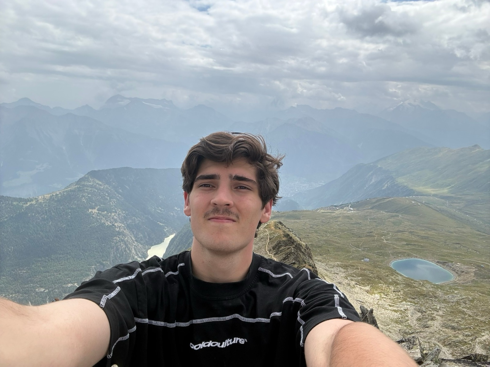

A free website that turns the people you know into a map, and shows the best chain of introductions into the companies you want to work at.
Built with JavaScript · 2026See the projectHello, I'm
Strategy Student | Product Builder | World Traveler
I build simple tools that help people connect. Growing up abroad and traveling the world taught me how much one good connection can change.

A free website that turns the people you know into a map, and shows the best chain of introductions into the companies you want to work at.
Built with JavaScript · 2026See the project